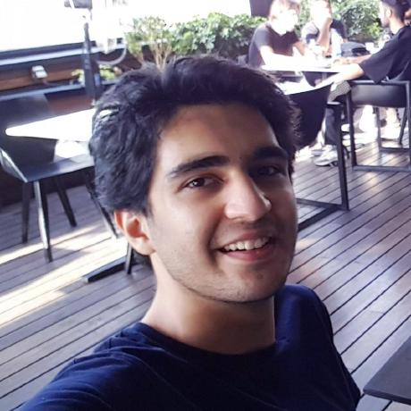
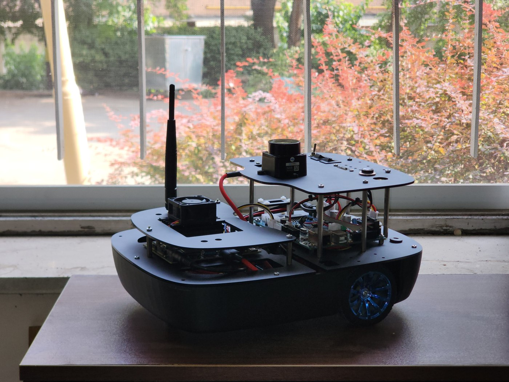

⌖ Kaiserslautern, Germany · Master’s student at RPTU
✳

Curious mind. Hands-on engineer.
a little theory, a lot of building ↗
⌁ Making robots make sense.
✧
Safe autonomy✳Human–robot interaction✳Learning systems✳Mobile robotics✳Control theory
01 / A LITTLE ABOUT ME
Where mathematical ideas meet moving things.
I’m a master’s student in Automation and Control at RPTU, with a bachelor’s in Electrical Engineering–Control Systems from Iran University of Science and Technology.
My work connects safe planning and control with the practical details of building a robot: embedded electronics, perception, ROS, and real-world testing. My undergraduate research focused on navigating dynamic environments with control Lyapunov and barrier functions.
I enjoy sharing what I learn, from teaching ROS2 to supporting control and microcontroller courses. Beyond engineering, you’ll find me drawn to literature, music, and photography.
A few projects at the intersection of algorithms, hardware, and motion.

FROM SIMULATION TO REALITY
Undergraduate researchROSCLF / CBF
Safe navigation. In a moving world.
Path following and collision avoidance for a wheeled mobile robot in dynamic environments. Control Lyapunov functions support stable tracking; a QP-based control barrier function acts as a safety filter.
Inside the project +
Developed at IUST under Dr. Majid Esmaeilzadeh. Combines a reference governor with CLF-based tracking and CBF safety constraints. Tested in Gazebo and on a physical differential-drive platform.
A modular mobile robot connecting ROS-based autonomy with real-time embedded control. Designed to bring mechanics, electronics, and software together in one research platform.
Inside the project +
A hierarchical architecture splits high-level processing on a Jetson computer from low-level sensing and motor control on a custom microcontroller board. The platform supports mapping, localization, and navigation.
Modeling, simulation, and control of serial rigid-link robots. Exploring kinematics, trajectory tracking, and the use of redundancy in confined environments.
Inside the project +
Summer 2024 research internship supervised by Prof. Enver Tatlicioğlu. Work included forward and inverse kinematics with the DH convention, dynamic modeling, and position- and velocity-level controllers.
Embedded systems, low-level speed control, and communication interfaces. Experience spanning warehouse automation at Digikala and custom robotics electronics.
Inside the project +
At Digikala, my work included STM32 programming, high-power DC motor control, and Ethernet/CAN communication. The image shows the separate Lenna controller-board project, documented in the linked public repository.
Graph search, configuration spaces, sampling-based planners, and potential fields. A collection of motion-planning explorations from the University of Pennsylvania’s robotics course.